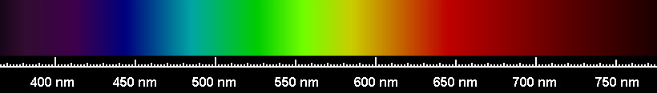

Fizyka Atomowa
Podwójna natura światła
Zjawisko fotoelektryczne zewnętrzne
Zjawisko fotochemiczne
Promieniowanie termiczne
Każde ciało powyżej zera bezwzględnego jest źródłem promieniowania elektromagnetycznego. W niższych temperaturach jest to podczerwień a ciała rozgrzewane do bardzo wysokich temperatur świecą – im wyższa temperatura, tym jaśniej świeci ciało, a zatem wysyła więcej energii. Zmienia się również barwa światła: w temperaturze ok. 500°C światło wysyłane przez rozgrzane ciało ma barwę ciemnoczerwoną, wraz ze wzrostem temperatury barwa ciała staje się najpierw pomarańczowa, potem jasnożółta, białożółta, a na końcu biała. Za emisję promieniowania cieplnego odpowiedzialna jest energia ruchu cieplnego atomów i cząsteczek w obserwowanym ciele. Jeżeli światło białe pochodzące ze słońca albo żarzącego się metalu przepuścimy przez pryzmat ulegnie rozszczepieniu. Gdy rozszczepione promienie padają na ekran, tworzy się na nim tak zwane widmo światła. Badając widmo, możemy stwierdzić, jakie długości fal emituje dane źródło.
| Światło jest falą elektromagnetyczną. Światło białe to mieszanina światła o różnych barwach, zawiera wszystkie barwy tęczy. Każdej barwie odpowiada inna długość fali. Światło czerwone to fala o największej długości, światło niebieskie i fioletowe – o najmniejszej. Rozgrzana materia (taka jak np. ciała stałe, ciekły metal, fotosfera Słońca) świecą światłem o widmie ciągłym. |
|---|
Przykład widma ciągłego:
Rys. 1. Widmo żarówki wolframowej
Różne ciała podgrzane do tej samej temperatury świecą niejednakowo. Jednakże okazuje się, że jeżeli wykona się wnękę w dowolnym materiale, pokryje się ją sadzą, to promieniowanie wychodzące z takiej wnęki praktycznie nie zależy od rodzaju materiału, w którym wnęka się znajduje, lecz od temperatury ciała. Takie promieniowanie nazywamy promieniowaniem ciała doskonale czarnego, a powierzchnię otworu, z którego ono wychodzi traktujemy jako model ciała doskonale czarnego.
| Ciałem doskonale czarnym nazywamy ciało, które pochłania w stu procentach padające nań światło o każdej długości fali (wiadomo, że w rzeczywistości ciało nigdy nie pochłania padającego nań promieniowania w stu procentach). |
|---|
Rys. 2. Model ciała doskonale czarnego. Pochłania całkowicie padające na nie promieniowanie ale pod wpływem rozgrzania może również emitować promieniowanie
Ciało doskonale czarne rozgrzane do wysokich temperatur emituje promieniowanie o widmie ciągłym. Możemy je badać przepuszczając przez pryzmat a następnie badając energię poszczególnych barw (długości) za pomocą czujnika np. fotokomórki.
Rys. 3. Rozszczepienie światła na pryzmacie
W roku 1859 niemiecki fizyk ustaw Kirchhoff sformułował prawo promieniowania, z którego wynika, że promieniowanie ciała doskonale czarnego nie zależy od rodzaju materiału a jedynie od jego temperatury. Z doświadczeń wynikało, że maksimum promieniowania zależy jedynie od temperatury ciała
Rys. 4. Natężenie promieniowania ciała doskonale czarnego w zależności od temperatury. Każda krzywa odpowiada innej temperaturze ciała, zaczynając od niskiej temperatury (najniższa krzywa), kończąc na wysokiej (najwyższa).
Ze wzrostem temperatury dominująca długość fali promieniowania przesuwa się w kierunku fal krótszych. Oznacza to, że podgrzewany pręt najpierw zaczyna świecić na czerwono, a w miarę wzrostu temperatury jego barwa się zmienia.
Zwróćmy uwagę, że wraz z temperaturą istotnie rośnie wysokość krzywych – emitowana energia wzrasta wraz ze wzrostem temperatury. Oznacza to po prostu, że im wyższa temperatura ciała, tym mocniej ono świeci.
Maksimum krzywej rozkładu widmowego promieniowania przesuwa się wraz ze wzrostem temperatury w kierunku mniejszych długości fal. Długość fali odpowiadająca maksimum jest odwrotnie proporcjonalna do temperatury bezwzględnej ciała:
| Prawo przesunięć Wiena: Długość fali odpowiadająca maksimum λmax jest odwrotnie proporcjonalna do temperatury bezwzględnej ciała: |
|---|
λmax=a/T |
| gdzie a jest pewną stałą, a= 2,898*10-3mK |